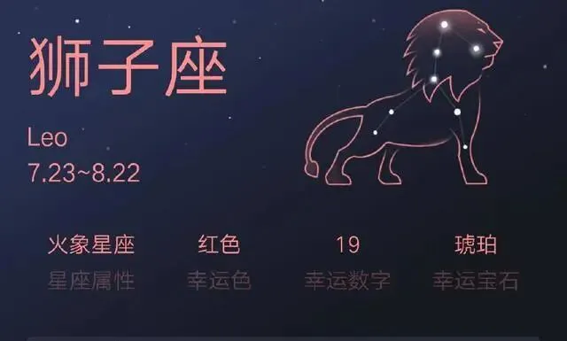
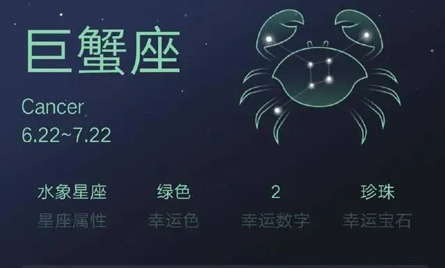
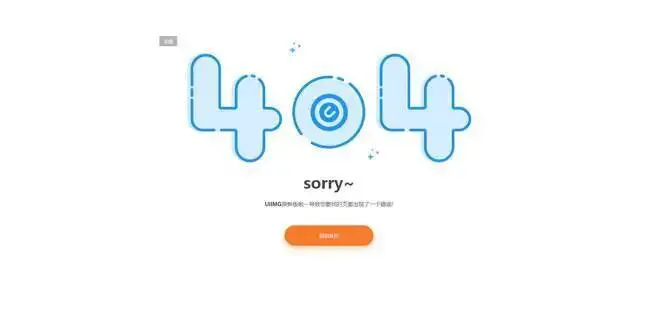
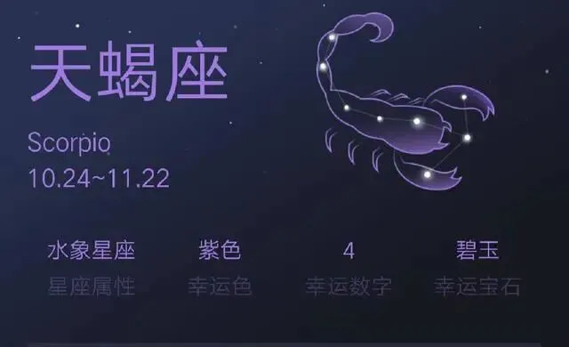

孖仔帮
公众号ID：twinsbang
关注
文|圆圈妈
网图|侵删
查血确认怀上时，刚好孕5周，那时候还不知道怀的是双胞胎，医生根据末次月经按40周的孕周，算出我的预产期是8月17日。
圆圈爸对这个“817”的数字欣喜若狂：幸运赶上8月的尾巴，可以早一年上学，早解脱！
而我则比较关心8月17日出生的宝宝会是什么星座，结果一查，竟然是狮子座，瞬间失望透顶！
也许有人会觉得星座而已，都是些虚无荒谬的东西，没什么大不了的，宝宝健康出生就好，但请容许我贪心地期待下，除了足月分娩，母婴同室，我还希望娃的星座跟自己的星座合得来。
这一切皆源于，我本人是巨蟹座，曾经也是个对星座学非常着迷的小姐姐，着迷到只凭星座只看感觉去找对象，家人给介绍对象时，不问有房有车先问星座是啥？
这不，圆圈爸就是我根据星座找来的老公，因听说巨蟹座和天蝎座是绝配，于是在千挑万选中嫁给了天蝎座的圆圈爸，我们都很默契地计划着，将来要生个跟我们同样水象星座的娃，即便不是绝佳组合，也希望不要太突兀。
所以，当得知这即将到来的娃竟然是火象星座的狮子座时，可想而知，我是有多崩溃。巨蟹+天蝎+1只小狮子，这样的一家三口，按照星座学的说法，狮子座宝宝高调张扬，遇上水象星座的巨蟹妈妈和天蝎爸爸，低调内敛， 那可是火星撞地球，水火不相容啊！
幸好，这只是上帝一时顽皮给我来了一个小小的恶作剧。
孕8周，第一次B超，医生告诉我，里面是双蛋黄，还是单绒双羊双胞胎那种，极大可能会早产，意思是预产期8月17日只是个误会而已，几乎99.9%会提前出生，具体提前多少天，看造化！
我惊吓了许久，缓过神后竟有一丝窃喜，早产？意思是他们有可能翻盘成巨蟹座，巨蟹妈+天蝎爸+2只小巨蟹，同是水象星座的一家四口，必定是和睦相处，其乐融融的！
这个YY的小期待让我把早产的风险顿时抛诸脑后，沉浸在有可能两个崽跟我一样是巨蟹座，甚至还有可能跟我同一天生日的美好邂逅中。
结果就是，他们不满36周就迫不及待地出生了，“817”预产期变成“718”出生日，太巧合了！
就在我很庆幸生了两只小巨蟹，等着他们软趴趴偎依在我怀里，安安静静地吃奶时，上帝又顽皮了，给我来了一个大大的恶作剧。
巨蟹座的两个宝宝，并没有想象中跟我们那么合拍，他们跟所有小婴儿一样爱哭，不讲道理，毫无逻辑可言，所有星座特点用在他们身上都是404！sorry.....
很纳闷，是不是巨蟹座的宝宝都缺安全感，特别爱哭，还是所有新生儿都这德行，喝奶时哭，拉屎了哭，即便睡着了也要哼哼哼唧唧地哭，就是要抱着才不哭。
很怀疑，巨蟹座宝宝根本就不是地球人，因为没有任何一样生物像他们那样，不分青红皂白轮流哭，一个比一个哭得凄惨，不管白天黑夜同时索抱，一个比一个难安抚，不论何时何地拉尿拉屎放屁，一个比一个难伺候…
星座学说最难带的星座宝宝第一名是水瓶座，这太不准了，明明是巨蟹座！最难带的星座宝宝，巨蟹座敢拿第二，没有哪个星座敢拿第一。
1岁后，两只小巨蟹更难带了，白天到处摸爬打滚，晚上经常夜醒又粘人，情绪易激动，一旦生气或者哭闹很难哄，即使向他们求爷爷告奶奶地认错了，他们还是得理不饶人，继续撒气继续哭。
可怜了我这个巨蟹座老母亲，明明内心五脏俱焚了还要陪着笑脸别吓着宝宝，幸亏上辈子母仪天下，内力深厚，才勉强hold住这两只最难带的四角吞金兽。
2岁了，难带指数直达巅峰，一个话痨，一个戏精，两张小嘴，从早到晚，叭叭讲个不停，12个星座的坏毛病，他们竟然全！中！招！比如...
像处女座一样的强迫症，衣服不能湿，白衣服不能脏， 自己的小餐具不能给别人用，躺着坐着睡着玩着都要按他们的方式来；
像天秤座一样爱纠结，玩具不知道玩哪个，衣服不知道选哪件，总感觉对方手上的才是最好的，结果就是抢抢抢；
像狮子座一样特别臭美，仿佛我是整条街最耀眼的崽；自尊心特强，不小心拿他们两人比较下，马上就噘嘴生气，不肯跟对方玩。
我曾经痴迷的星座学，此刻被我鄙夷得一塌糊涂，果然星座都是骗人的，不准的，伪科学的，我为自己曾经那么在意孩子的星座苦笑不已。
3岁了，终于发现他们身上的确具备巨蟹座“多愁善感”的经典特性。
那天给他们看一部叫《恐龙当家》的动画片，有一个片段，恐龙爸爸为了救小恐龙被洪水冲走了，小恐龙那一声悲惨的喊叫“爸爸...”，圆圈哥俩当即嚎啕大哭，整个下午都在断断续续地哭，一直重复着：“恐龙爸爸被水冲走了，小恐龙没有爸爸了！妈妈你快点去救啊！”
在这之后，我发现他们每次看到电视里感人的画面，都会趴在我们怀里跟着剧中人物一起大哭，边看边抹泪，哭得那个伤心啊，好像真的那样，让我们都哭笑不得。
好在这也不是件坏事，他们有这样的表现说明哥俩的感情比较丰富，懂得换位思考。果真如星座学说的那样：巨蟹宝宝是不折不扣的暖宝宝。他们就像“蟹蟹”一样，坚硬的外壳下，藏着一颗害羞、柔软的内心。
随着他们渐渐长大，我好像对星座又慢慢地相信了，也许是从小把他们带在身边，亲子关系的基础够扎实，也许是我们娘仨都同属水象星座，我们3个巨蟹相处在一起，目前看来还是蛮融洽的，虽然我有时会忍不住吼娃，他们也会跟我闹脾气，但我们始终都没有用身上锐利的大钳子伤害着彼此。
天蝎座的圆圈爸和两只小巨蟹更投缘了，圆圈爸本身就很有耐心，也很喜欢与小孩子玩，他似乎有特异功能，能镇住我这个巨蟹座妈妈的神经质，也能降得住两只小巨蟹儿子的调皮捣蛋。
山雨欲来风满楼，养娃育儿，是场持久战，不知道等这两只巨蟹座双胞胎上小学后，我们这个水象星座的一家四口又会是怎样的一番“鸡飞狗跳”。
人各有异，不管什么星座，生肖，血型…每个孩子都有自己独特的性格特质，相信只要我们做父母的教育引领得当，孩子们必定能健康快乐地成长。
最后，来做一个很有意思的投票统计：你家双胞胎是什么星座呢？
快来投票吧，看看哪个星座的双胞胎独占鳌头。
-END-
今日互动话题
#接龙|你们家的星座组合是什么？#
评论区聊一聊呗！
微信公众号：孖仔帮
ID : twinsbang
专注双胞胎孕育，养育，教育经验分享
扫码关注我们
点一下你会更好看耶




